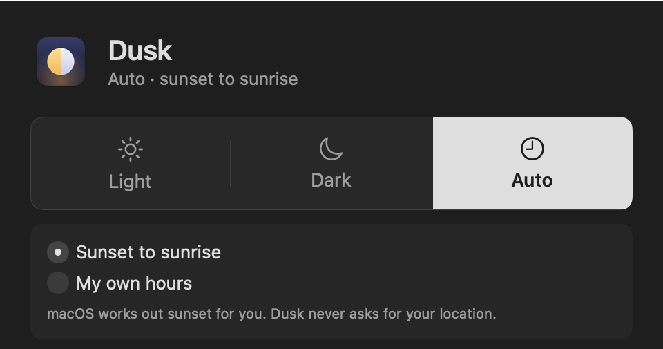
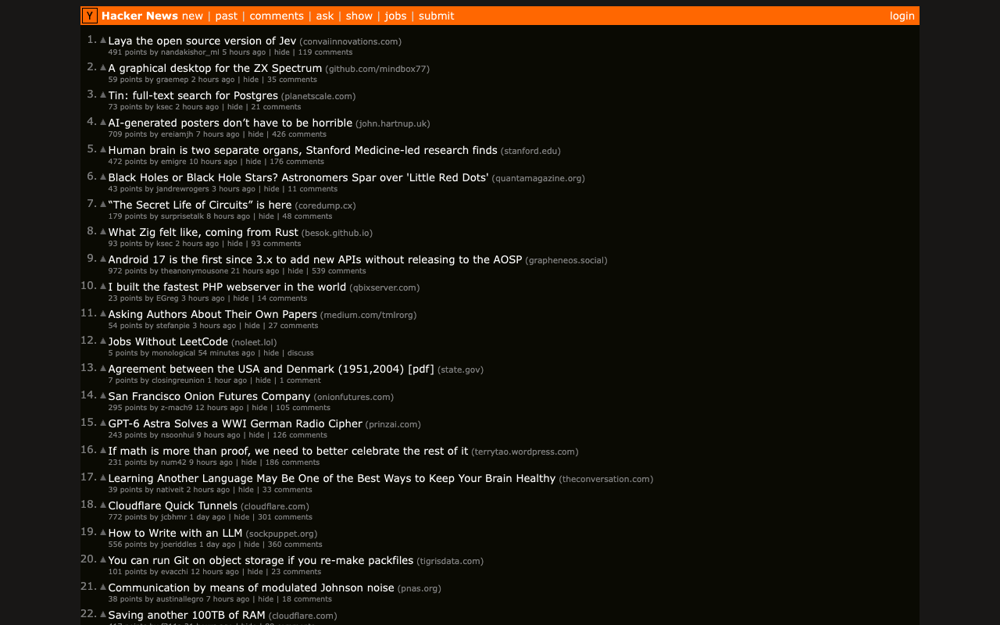

One switch for light and dark. Everything follows.
Dusk lives in your Mac's menu bar. Press Light or Dark, or let it follow the sunset, and macOS, your apps and your websites change together.
Free. No account. Dusk makes no network connections.

What the built-in switch leaves out
macOS can already turn dark at sunset. But some apps keep their own theme, some websites have no dark mode at all, and you end up with white rectangles at midnight. Dusk closes those gaps.
Knows your apps
Dusk checks every app on your Mac and tells you which ones follow, which need a one-time change, and exactly where that setting is.
Exceptions, your way
Keep one app dark all the time, or light all the time, whatever the rest of the Mac does. A short guide walks you through it.
Sunset or your hours
Follow sunset without ever sharing your location, or set your own hours. A manual press always wins.
Never restarts behind your back
A few apps only change when they reopen. You decide, app by app, whether Dusk may do that. Never during a call or a dictation.
Out of the way
A menu bar icon and a small window. No Dock icon, no notifications, nothing running that you did not ask for.
Says what it does
History shows what switched, when and why. Every file Dusk reads or changes is listed in the privacy policy.
Websites, too
Dusk for Chrome darkens sites that have no dark mode whenever your computer is dark, and leaves sites with a good dark mode alone.
- Photos and video keep their natural colours.
- Set one site always dark, always light, or off, from the popup.
- Nothing is remembered in Incognito windows.
- It works by itself. The Mac app is not required.

What Dusk cannot do
- macOS does not let one standard Mac app stay dark while the rest is light. Dusk can keep such an app light, but not dark.
- Some apps, such as Calculator or Minecraft, have one fixed look. Nothing can change that, and Dusk says so.
- Apps with their own theme setting need one click inside that app, once. Dusk never writes into another app's private storage.
- Pages that use colour to carry meaning, such as charts and maps, can look wrong when darkened. Switch Dusk off for that site.
Private because there is nothing to send
No accounts, no analytics, no crash reports, no servers. The Mac app makes no network connections at all. The full list of what Dusk reads and changes is in the privacy policy.